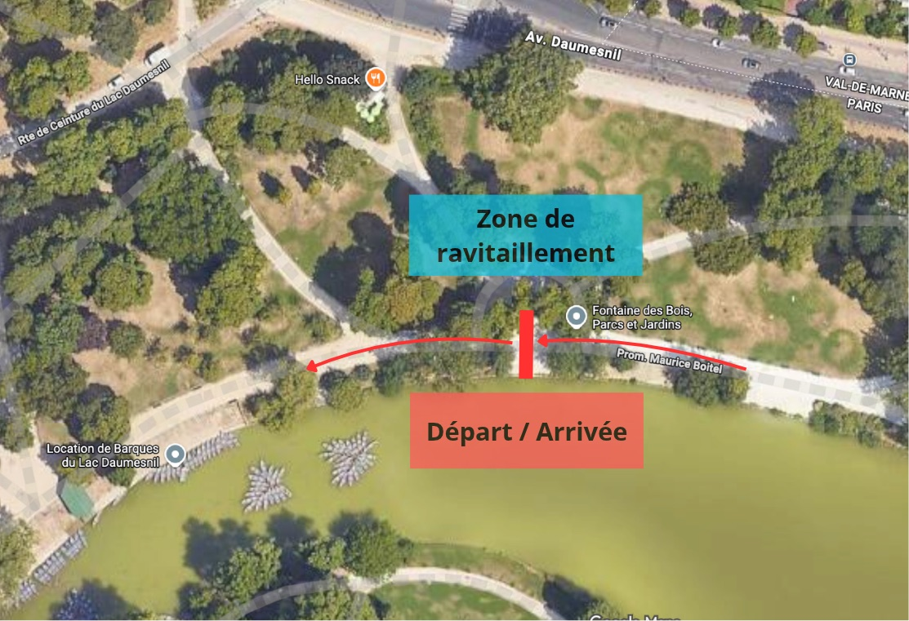

Le teaser
▶
Teaser vidéo bientôt disponible
Backyard · Paris 12e · Boucle de 1,9 km · 30 secondes de moins à chaque tour
Backyard · Paris 12e · Boucle de 1,9 km · 30 secondes de moins à chaque tour
Le principe de la backyard : les coureurs s'élancent ensemble pour une boucle,
et tant que tu boucles dans le temps imparti, tu repars au départ suivant. Une backyard se termine lorsqu'il ne reste plus qu'un·e participant·e en lice.
Pour la backyard Daumesnil, la version est dégressive et d'une boucle de 1,9 km : 15'00 pour la 1re boucle, puis
30 secondes de moins à chaque tour. 16 boucles pour finir la Backyard. S'il reste plus d'un·e participant·e à la fin de la 16e boucle, une 17e boucle se jouera en
race to finish : le premier ou la première à franchir la ligne d'arrivée l'emporte.
| Tour | Heure de départ | Temps max | Allure /km |
|---|---|---|---|
| 1 | 9:00:00 | 15'00 | 7'54 |
| 2 | 9:15:00 | 14'30 | 7'38 |
| 3 | 9:29:30 | 14'00 | 7'22 |
| 4 | 9:43:30 | 13'30 | 7'06 |
| 5 | 9:57:00 | 13'00 | 6'51 |
| 6 | 10:10:00 | 12'30 | 6'35 |
| 7 | 10:22:30 | 12'00 | 6'19 |
| 8 | 10:34:30 | 11'30 | 6'03 |
| 9 | 10:46:00 | 11'00 | 5'47 |
| 10 | 10:57:00 | 10'30 | 5'32 |
| 11 | 11:07:30 | 10'00 | 5'16 |
| 12 | 11:17:30 | 9'30 | 5'00 |
| 13 | 11:27:00 | 9'00 | 4'44 |
| 14 | 11:36:00 | 8'30 | 4'28 |
| 15 | 11:44:30 | 8'00 | 4'13 |
| 16 | 11:52:30 | 7'30 | 3'57 |
Allure minimale calculée sur une boucle de 1,9 km.
Une boucle de 1,9 km autour du Lac Daumesnil, dans le Bois de Vincennes. Plat, roulant, et ravitaillement à chaque passage.
Tout se passe au même endroit : sur la promenade Maurice-Boitel, rive nord du lac, juste après la location de barques, entre l'avenue Daumesnil et le lac.

5 lots à gagner : 2 en individuel, 3 par équipe. Tu choisis ta formule au moment de l'inscription.
Sois le dernier ou la dernière en lice. S'il reste plusieurs coureur·ses à la fin de la 16e boucle, tout se joue sur la 17e en race to finish : premier·e à franchir la ligne.
Réservé aux inscrit·es en individuel.
Inscrivez-vous sous le même nom d'équipe. Chaque membre court sa propre course mais les boucles de chacun·e comptent dans le classement final de l'équipe !
Lac Daumesnil, Paris 12e.
L'inscription est gratuite.
Elle est obligatoire et se fait en ligne sur Luma.
Un ravitaillement est fourni par l'organisation, mais pense à prévoir le tien : c'est toi qui sais ce qui passe le mieux après 10 boucles.
Préviens-nous avant le 20 janvier 2027. Les dossards sont nominatifs : ton remplaçant devra s'inscrire lui-même avec son propre justificatif.
Famille et amis sont les bienvenus pour encourager autour du lac. Le format en boucle permet de voir passer les coureurs à chaque tour !
Non, la Backyard Daumesnil est gratuite. L'inscription en ligne reste obligatoire.
Ça dépend de toi ! Chaque boucle fait 1,9 km. Pour aller au bout des 16 boucles, ce sont 30,4 km, en 3 heures (de 9 h 00 à 12 h 00). Et s'il faut jouer la 17e boucle en race to finish, 1,9 km de plus.
Non. Les premières boucles se font en footing tranquille (7'54/km au 1er tour), puis le rythme s'accélère petit à petit. Chacun va jusqu'à sa limite : c'est un super format pour se tester, entouré d'autres coureurs.
Ta course s'arrête. Tu es classé·e avec le nombre de boucles réalisées dans les temps. Tu peux rester sur place pour encourager les autres !
Non. Tout le monde part ensemble au signal, et il faut prendre chaque départ. Manquer un départ équivaut à un abandon.
La Backyard compte 16 boucles, avec un temps imparti qui diminue de 30 secondes à chaque tour (de 15'00 à 7'30). Elle s'arrête plus tôt s'il ne reste qu'un·e participant·e en lice. S'il reste plusieurs coureur·ses à la fin de la 16e boucle, une 17e boucle part à 12 h 00 en race to finish : c'est une vraie course, le premier ou la première à franchir la ligne gagne.
Les équipes comptent de 2 à 4 coureurs. Tu choisis la formule « équipe » à l'inscription et indiques le nom de ton équipe. Chaque membre court individuellement et les boucles de tous les membres s'additionnent. Le total est ensuite ramené au prorata du nombre de coureur·ses, pour que les équipes de 2, 3 ou 4 soient sur un pied d'égalité.
Non. Les lots individuels (meilleur homme, meilleure femme) sont réservés aux inscrit·es en individuel. Si tu vises un lot individuel, inscris-toi en individuel, sans rejoindre d'équipe.
Oui, un ravitaillement est fourni dans la zone de départ-arrivée. Nous te conseillons quand même d'apporter ton propre ravitaillement, adapté à tes habitudes.
Ta pièce d'identité pour récupérer ton dossard, ton ravitaillement personnel et des vêtements chauds. En février, le froid se fait vite sentir pendant les pauses.
Préviens-nous avant le 20 janvier 2027. Les dossards sont nominatifs : si quelqu'un veut prendre ta place, il doit s'inscrire lui-même avec son propre justificatif.
Métro ligne 8 (Porte Dorée) ou tramway T3a, puis quelques minutes à pied jusqu'à la rive nord du lac : promenade Maurice-Boitel, juste après la location de barques (Google Maps). Le vélo est aussi une excellente option.
Bien sûr ! Le parcours en boucle autour du lac est idéal pour les supporters : ils te verront passer à chaque tour.
Inscris-toi gratuitement, en individuel ou en équipe de 2 à 4, et rejoins-nous le 6 février 2027 au Lac Daumesnil.
Je m'inscris